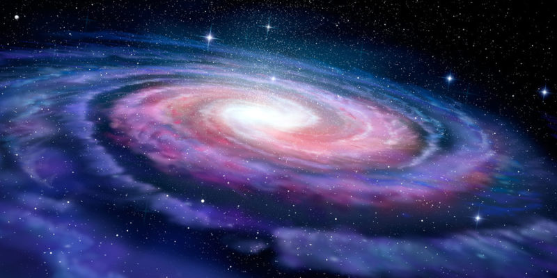

El universo es la totalidad del espacio y del tiempo, de todas las formas de la materia, la energía, el impulso, las leyes y constantes físicas que las gobiernan. Sin embargo, el término también se utiliza en sentidos contextuales ligeramente diferentes y alude a conceptos como cosmos, mundo o naturaleza. Su estudio, en las mayores escalas, es el objeto de la cosmología, disciplina basada en la astronomía y la física, en la cual se describen todos los aspectos de este universo con sus fenómenos.
La ciencia modeliza el universo como un sistema cerrado que contiene energía y materia adscritas al espacio-tiempo y que se rige fundamentalmente por principios causales. Basándose en observaciones del universo observable, los físicos intentan describir el continuo espacio-tiempo en el que nos encontramos, junto con toda la materia y energía existentes en él.
Los experimentos sugieren que el universo se ha regido por las mismas leyes físicas, constantes a lo largo de su extensión e historia. Es homogéneo e isotrópico. La fuerza dominante en distancias cósmicas es la gravedad, y la relatividad general es actualmente la teoría más exacta para describirla. Las otras tres fuerzas fundamentales, y las partículas en las que actúan, son descritas por el modelo estándar.
El universo tiene por lo menos tres dimensiones de espacio y una de tiempo, aunque experimentalmente no se pueden descartar dimensiones adicionales. El espacio-tiempo parece estar conectado de forma sencilla, y el espacio tiene una curvatura media muy pequeña o incluso nula, de manera que la geometría euclidiana es, como norma general, exacta en todo el universo. Las observaciones astronómicas indican que el universo tiene una edad de 13 799±21 millones de años (entre 13 778 y 13 820 millones de años con un intervalo de confianza del 68%) y por lo menos 93 000 millones de años luz de extensión.
Debido a que, según la teoría de la relatividad especial, la materia no puede moverse a una velocidad superior a la velocidad de la luz, puede parecer paradójico que dos objetos del universo puedan haberse separado 93 000 millones de años luz en un tiempo de únicamente 13 000 millones de años; sin embargo, esta separación no entra en conflicto con la teoría de la relatividad general, ya que esta solo afecta al movimiento en el espacio, pero no al espacio mismo, que puede extenderse a un ritmo superior, no limitado por la velocidad de la luz. Por lo tanto, dos galaxias pueden separarse una de la otra más rápidamente que la velocidad de la luz si es el espacio entre ellas el que se dilata.